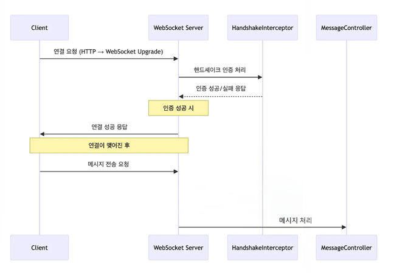
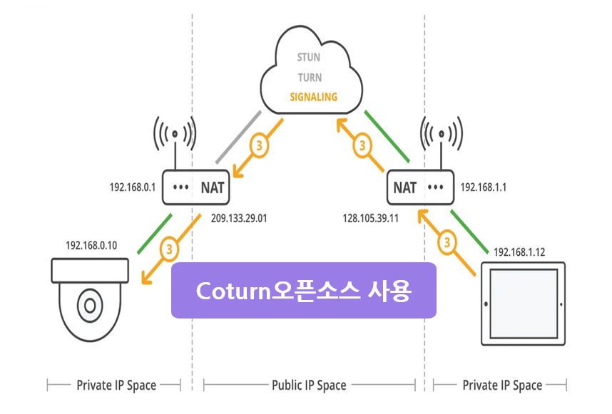

음성 AI와 WebRTC 기반으로
청각장애 아동의 발음 및 언어 학습을 지원하는 서비스
GitHub 바로가기
[실시간 통신]
WebSocket 시그널링 서버 구축
WebRTC 연결 처리
[보안]
WebSocket 연결 시 JWT 기반 사용자 인증
[서비스]
WebRTC 화상 기반 단어 학습 게임 구현
실시간 영상/음성 처리 UI 구성
WebSocket:
[이유1]
직접 시그널링 서버를 구현함으로써 WebRTC 연결 흐름을 제어하고,
Spring Boot 인증 시스템과 통합하여 사용자 식별을 수행.
[이유2]
Polling 방식 대비 낮은 지연으로
실시간 통신 환경에 적합한 구조를 설계.
- SSAFY 공통 프로젝트 우수상 (부울경 1반 1등)
- Sherpa-ONNX Zipformer 기반 STT 모델 적용
- WebRTC + WebSocket 기반 실시간 학습 게임 구현

[문제]
WebSocket 연결 시 Spring Security 필터가 적용되지 않아,
JWT 로그인만으로는 연결 사용자의 인증 및 식별이 불가능
[해결]
HandshakeInterceptor를 적용하여
유효한 사용자만 WebSocket 연결을 허용하도록 구현
[결과]
인증된 사용자만 WebSocket 연결이 가능하도록 개선하여
실시간 통신 환경에서 사용자 식별 및 보안성 확보

[문제]
WebRTC P2P 연결이 NAT 및 방화벽 환경에서 실패하여
일부 사용자 간 영상 및 음성 연결이 불가능
[해결]
Coturn 기반 TURN 서버를 구축하여
중계 방식의 연결 구조를 적용
[결과]
다양한 네트워크 환경에서도
안정적인 WebRTC 연결이 가능하도록 개선